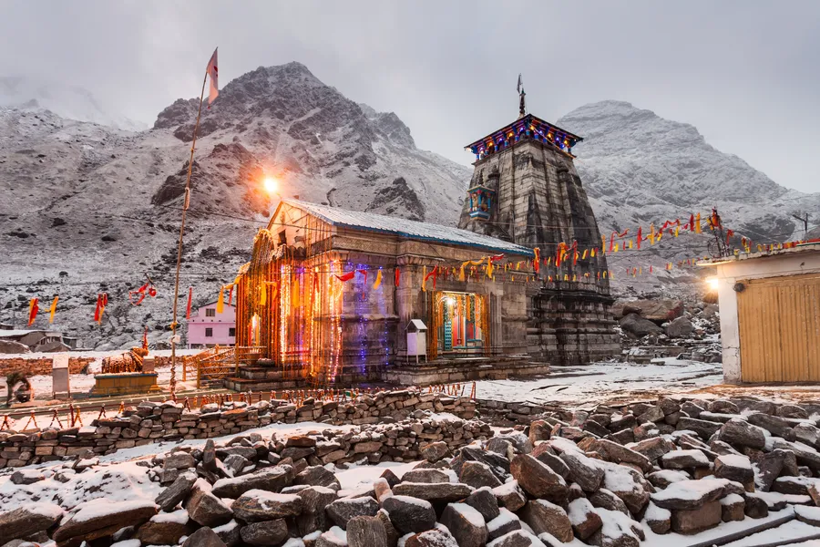

About:
At a height of 3,583 m (11,755 ft), 223 km (139 mi) from Rishikesh, on the shores of Mandakini river, a tributary of Ganga, is a stone edifice of unknown date.[7] It is not certain who built the original Kedarnath temple and when. The name "Kedarnath" means "the lord of the field": it derives from the Sanskrit words kedara ("field") and natha ("lord"). The text Kashi Kedara Mahatmya states that it is so called because "the crop of liberation" grows here.[8]
Photo:


A folk legend about Panch Kedar relates to the Pandavas, the heroes of the Hindu epic Mahabharata. The Pandavas defeated and slew their cousins — the Kauravas in the epic Kurukshetra war. They wished to atone for the sins of committing fratricide (gotra hatya) and Brāhmanahatya (killing of Brahmins — the priest class) during the war. Thus, they handed over the reins of their kingdom to their kin and left in search of the lord Shiva and to seek his blessings. First, they went to the holy city of Varanasi (Kashi), believed to be Shiva's favourite city and known for its Kashi Vishwanath Temple. But, Shiva wanted to avoid them as he was deeply incensed by the death and dishonesty at the Kurukshetra war and was, therefore, insensitive to Pandavas' prayers. Therefore, he assumed the form of a bull (Nandi) and hid in the Garhwal region.